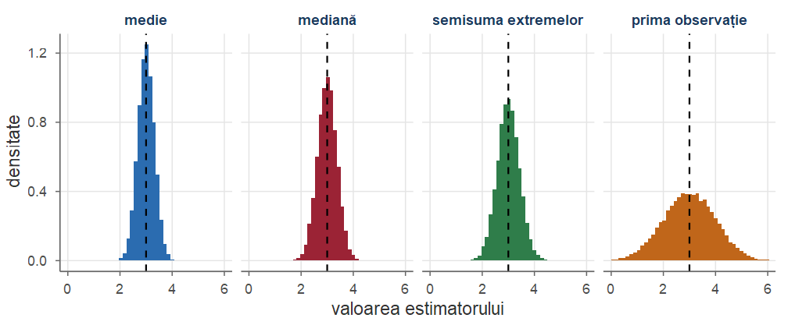
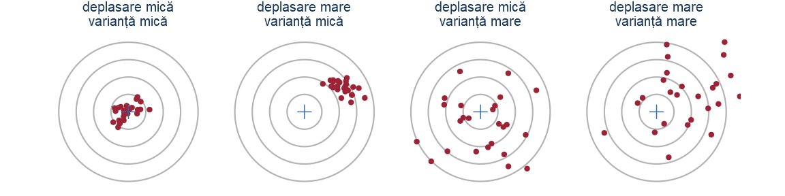
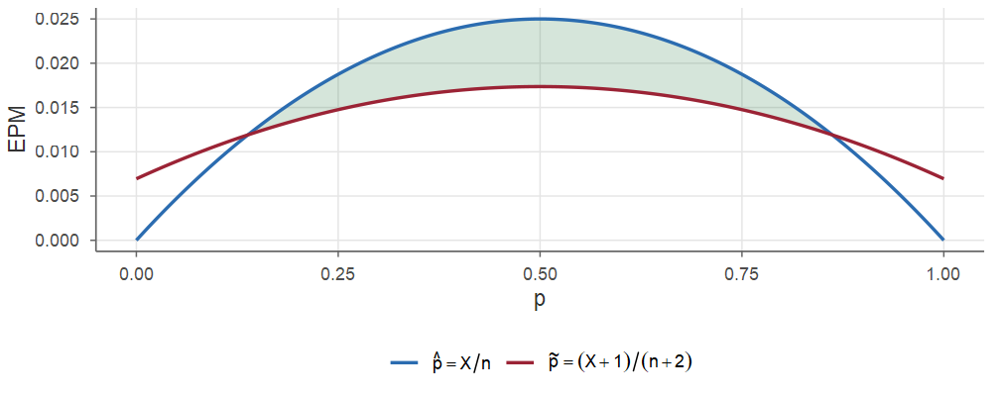
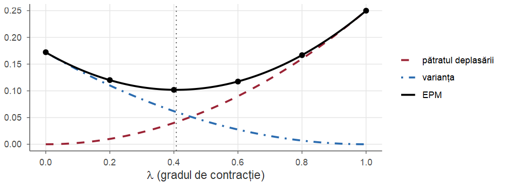
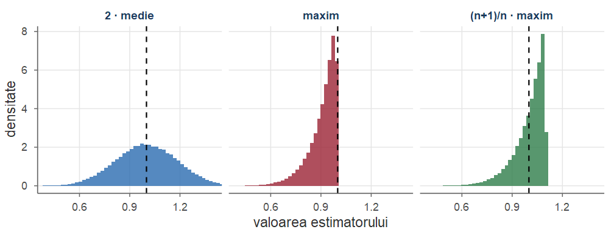
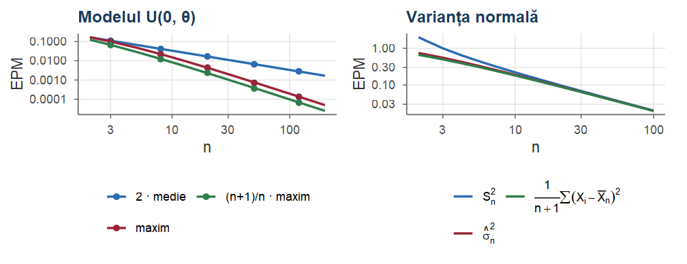
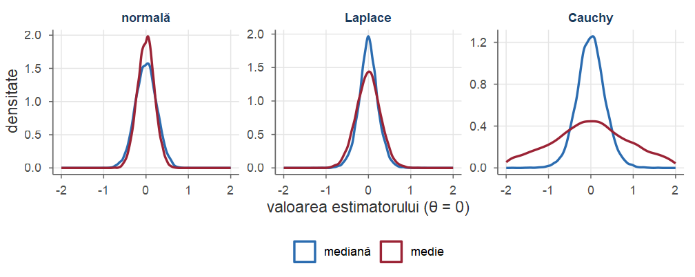
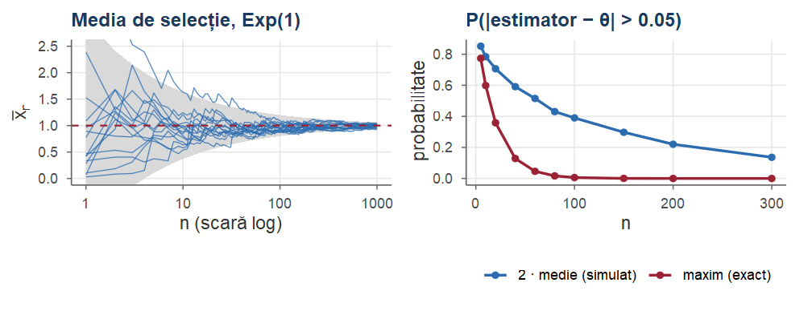
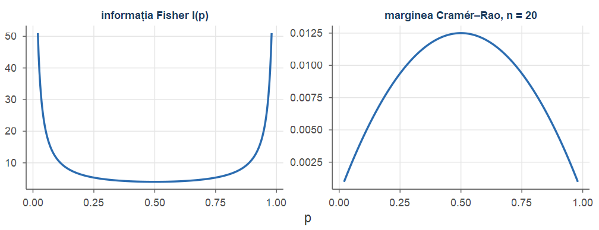

#> [1] 0.7158Probabilități și Statistică · Cursul 9
Universitatea din București · Facultatea de Matematică și Informatică · 2026–2027
| Partea | Conținut |
|---|---|
| I | Problema estimării. Estimatori nedeplasați. Estimarea varianței |
| II | Eroarea pătratică medie. Compromisul deplasare–varianță. Eficiență relativă |
| III | Consistență. Informația Fisher. Cramér–Rao. Suficiență. Eroarea standard |
| IV | Exerciții rezolvate recapitulative |
La sfârșitul cursului, studenții trebuie să poată:
Fie \(X_1,\dots,X_n\) un eșantion aleator (v.a. \(\iid\)) dintr-o populație cu media \(\mu\) și varianța \(\sigma^2\).
Pentru orice \(x_1,\dots,x_n\in\R\) și orice \(a\in\R\): \(\displaystyle\sum_{i=1}^n (x_i-a)^2=\sum_{i=1}^n (x_i-\bar x_n)^2+n(\bar x_n-a)^2 .\)
Întrebarea cursului: după ce criterii alegem între ei?
Criterii: nedeplasare · eroare pătratică medie · eficiență · consistență · marginea Cramér–Rao · suficiență.
Fie \(X_1,\dots,X_n\) un eșantion aleator din populația \(F_\theta\), \(\theta\in\Theta\), și \(g:\Theta\to\R\) o funcție a parametrului. Un estimator al lui \(g(\theta)\) este o statistică \[ \hat\theta_n=T_n(X_1,\dots,X_n), \] adică o funcție de eșantion care nu depinde de \(\theta\), folosită pentru a aproxima \(g(\theta)\). Valoarea \(T_n(x_1,\dots,x_n)\) calculată pe datele observate se numește estimație (sau estimare) a lui \(g(\theta)\).
Analogie: o metodă de măsurare bună poate da, ocazional, o măsurătoare proastă. Judecăm metoda, nu o măsurătoare izolată.
În exemplul urnei din Cursul 8, cu \(X_i\sim\Bern(p)\) și \(n=20\), estimatorul lui \(p\) este proporția de selecție \(\hat p=\Xbar=\frac1{20}\sum_{i=1}^{20}X_i\), o variabilă aleatoare cu \(20\hat p\sim\Bin(20,p)\) și valori posibile \(0,\frac1{20},\dots,1\). Pentru datele observate (5 bile roșii), estimația este numărul \(0.25\).
Dacă \(p=0.23\), estimatorul ia valoarea exactă \(p\) cu probabilitatea \(0\) (deoarece \(0.23\cdot20\) nu este întreg), dar ia valori în \([0.15,\,0.30]\) cu probabilitatea \(\PP(3\le 20\hat p\le6)\approx0.72\).
Fie \(X_1,\dots,X_n\) un eșantion dintr-o populație simetrică față de un centru \(\theta\) necunoscut (de exemplu \(\Norm(\theta,1)\)). Candidați naturali pentru estimarea lui \(\theta\):
Primii trei estimatori sunt toți „centrați” în \(\theta\), prin simetrie. Ultimii doi sunt evident nerezonabili: \(X_1\) ignoră aproape toată informația, iar constanta \(5\) ignoră complet datele (deși este excelentă dacă, întâmplător, \(\theta=5\)!).

Populație \(\Norm(\theta=3,1)\), \(n=10\), \(20\,000\) de eșantioane. Toți patru sunt centrați în \(\theta\), dar împrăștierea diferă mult. Constanta \(5\) ar fi o bară la \(5\).
Prima cerință naturală: estimatorul să nu greșească sistematic într-o anumită direcție.
Fie \(\hat\theta_n\) un estimator al lui \(\theta\) cu \(\E_\theta|\hat\theta_n|<\infty\). Deplasarea (engl. bias) lui \(\hat\theta_n\) este \[ \Bias_\theta(\hat\theta_n)=\E_\theta\big[\hat\theta_n\big]-\theta . \] Estimatorul \(\hat\theta_n\) este nedeplasat dacă \(\E_\theta[\hat\theta_n]=\theta\) pentru orice \(\theta\in\Theta\). În caz contrar, este deplasat. Estimatorul este asimptotic nedeplasat dacă \(\Bias_\theta(\hat\theta_n)\to0\) când \(n\to\infty\), pentru orice \(\theta\in\Theta\).
Deplasarea se poate calcula doar teoretic (depinde de \(\theta\) necunoscut) sau se poate aproxima prin simulare pentru valori fixate ale lui \(\theta\): media valorilor estimatorului pe multe eșantioane simulate, minus \(\theta\).
Fie \(X_1,\dots,X_n\) un eșantion dintr-o populație cu media \(\mu\) finită. Atunci \(\Xbar\) este un estimator nedeplasat al lui \(\mu\). Mai general, pentru orice \(k\) cu \(\E|X|^k<\infty\), momentul de selecție \(\bar m_k=\frac1n\sum_iX_i^k\) este un estimator nedeplasat al momentului \(\E[X^k]\).
Demonstrație. Din liniaritatea mediei, \(\E[\bar m_k]=\frac1n\sum_{i=1}^n\E[X_i^k]=\frac1n\cdot n\,\E[X^k]=\E[X^k]\); pentru \(k=1\) obținem \(\E[\Xbar]=\mu\).■
Din Propoziția 3 rezultă imediat:
Fie \(X_1,\dots,X_n\), \(n\ge2\), un eșantion dintr-o populație cu media \(\mu\) și varianța \(\sigma^2<\infty\). Atunci \[ \E\big[S_n^2\big]=\sigma^2,\qquad \E\big[\hat\sigma_n^2\big]=\frac{n-1}{n}\,\sigma^2 . \] Așadar \(S_n^2\) este un estimator nedeplasat al lui \(\sigma^2\), pe când \(\hat\sigma_n^2\) este deplasat, cu deplasarea \(\Bias(\hat\sigma_n^2)=-\sigma^2/n\), dar asimptotic nedeplasat.
Acesta este motivul pentru factorul \(1/(n-1)\) din definiția varianței de selecție.
Demonstrație. Aplicăm descompunerea sumei pătratelor (Lema 5 din Cursul 8) cu \(a=\mu\): \[ \sum_{i=1}^n\big(X_i-\Xbar\big)^2=\sum_{i=1}^n(X_i-\mu)^2-n\big(\Xbar-\mu\big)^2 . \] Luăm media în ambii membri. Cum \(\E[(X_i-\mu)^2]=\Var(X_i)=\sigma^2\) și \(\E[(\Xbar-\mu)^2]=\Var(\Xbar)=\sigma^2/n\), \[ \E\Big[\sum_{i=1}^n\big(X_i-\Xbar\big)^2\Big]=n\sigma^2-n\cdot\frac{\sigma^2}{n}=(n-1)\sigma^2 . \] Împărțind la \(n-1\), respectiv la \(n\), obținem cele două relații.■
Teorema 4 nu presupune normalitatea populației. Simularea următoare, pentru o populație \(\Exp(1)\) (cu \(\sigma^2=1\)) și \(n=10\), confirmă că \(S_n^2\) este nedeplasat, iar \(\hat\sigma_n^2\) subestimează în medie varianța cu factorul \((n-1)/n=0.9\).
Timpii de reacție (în zecimi de secundă) ai unui subiect: \(4.2,\ 5.1,\ 3.8,\ 6.0,\ 4.9\). Avem \(\bar x=\frac{24}{5}=4.8\) și \[ \sum_i(x_i-\bar x)^2=0.36+0.09+1+1.44+0.01=2.9, \] deci \(s^2=\frac{2.9}{4}=0.725\) (estimație nedeplasată a lui \(\sigma^2\)), \(\hat\sigma^2=\frac{2.9}{5}=0.58\) și \(s=\sqrt{0.725}\approx0.851\).
Deși \(S_n^2\) este nedeplasat pentru \(\sigma^2\), abaterea standard de selecție \(S_n\) este un estimator deplasat al lui \(\sigma\). Într-adevăr, cum \(\Var(S_n)=\E[S_n^2]-(\E[S_n])^2\ge0\), avem \[ \E[S_n]\le\sqrt{\E[S_n^2]}=\sigma, \] cu egalitate doar dacă \(S_n\) este constantă. Pentru o populație normală, folosind \((n-1)S_n^2/\sigma^2\sim\chisq{n-1}\), se obține \[ \E[S_n]=c_4(n)\,\sigma,\qquad c_4(n)=\sqrt{\frac{2}{n-1}}\;\frac{\Gamma(n/2)}{\Gamma\big((n-1)/2\big)} . \]
#> [1] 0.798 0.940 0.973 0.991Nedeplasarea nu se păstrează prin transformări neliniare: dacă \(\hat\theta\) este nedeplasat pentru \(\theta\), \(h(\hat\theta)\) nu este, în general, nedeplasat pentru \(h(\theta)\).
Exemple: \(S_n\) pentru \(\sigma\); \(1/\Xbar\) pentru \(\lambda\) în modelul exponențial.
Fie \(X_1,\dots,X_n\) un eșantion din \(\Unif(0,\theta)\), \(\theta>0\) necunoscut, și \(M_n=X_{(n)}=\max_iX_i\). Toate observațiile sunt mai mici decât \(\theta\), deci maximul este un candidat natural. Funcția de repartiție a lui \(M_n\) este \[ F_{M_n}(x)=\PP(X_1\le x,\dots,X_n\le x)=\Big(\frac x\theta\Big)^n,\qquad 0\le x\le\theta, \] deci densitatea este \(f_{M_n}(x)=\dfrac{nx^{n-1}}{\theta^n}\) pe \([0,\theta]\).
Momentele maximului: \[ \E[M_n]=\int_0^\theta x\,\frac{nx^{n-1}}{\theta^n}\dd x=\frac{n}{n+1}\,\theta,\qquad \E[M_n^2]=\int_0^\theta x^2\,\frac{nx^{n-1}}{\theta^n}\dd x=\frac{n}{n+2}\,\theta^2 . \] Așadar \(M_n\) este deplasat, \(\Bias(M_n)=-\frac{\theta}{n+1}\) (el subestimează întotdeauna \(\theta\)), dar asimptotic nedeplasat. Estimatorul corectat \(\frac{n+1}{n}M_n\) este nedeplasat.
Nedeplasarea este o proprietate atrăgătoare, dar nu trebuie absolutizată. Un estimator nedeplasat:
Și invers: un estimator ușor deplasat poate fi mult mai precis decât unul nedeplasat (Partea II).
Fie \(X\sim\Pois(\lambda)\) o singură observație (de exemplu, numărul de apeluri primite într-un minut) și dorim să estimăm \(g(\lambda)=e^{-2\lambda}\) (probabilitatea ca în următoarele două minute să nu existe niciun apel). Dacă \(T(X)\) este nedeplasat, atunci pentru orice \(\lambda>0\) \[ \sum_{k=0}^\infty T(k)\,\frac{e^{-\lambda}\lambda^k}{k!}=e^{-2\lambda}\iff\sum_{k=0}^\infty T(k)\,\frac{\lambda^k}{k!}=e^{-\lambda}=\sum_{k=0}^\infty\frac{(-1)^k\lambda^k}{k!} . \]
Morala: nedeplasarea este un criteriu util, dar nu suficient. Avem nevoie de o măsură a apropierii estimatorului de parametru: eroarea pătratică medie.
Fie \(X_1,\dots,X_n\overset{\iid}{\sim}\Pois(\lambda)\), \(n\ge2\), și \(S=\sum_iX_i\sim\Pois(n\lambda)\). Pentru \(T=\big(1-\frac1n\big)^S\), \[ \E[T]=\sum_{k\ge0}\Big(1-\frac1n\Big)^k\frac{e^{-n\lambda}(n\lambda)^k}{k!}=e^{-n\lambda}\,e^{n\lambda(1-1/n)}=e^{-\lambda}. \] Deci \(T\) este nedeplasat pentru \(\PP(X=0)=e^{-\lambda}\) și ia valori în \((0,1]\). Pentru \(n=1\) regăsim \(T=0^X=\Ind_{\{X=0\}}\).
#> media_T tinta media_exp_minus_medie
#> 0.2225 0.2231 0.2561Un estimator bun trebuie să fie aproape de parametru. Cel mai folosit mod de a măsura distanța medie dintre estimator și parametru este media pătratului erorii.
Eroarea pătratică medie (EPM; engl. mean squared error, MSE) a estimatorului \(\hat\theta\) al lui \(\theta\) este \[ \MSE_\theta(\hat\theta)=\E_\theta\big[(\hat\theta-\theta)^2\big]. \]
Pentru orice estimator \(\hat\theta\) cu \(\E[\hat\theta^2]<\infty\), \[ \MSE(\hat\theta)=\Var(\hat\theta)+\big(\Bias(\hat\theta)\big)^2 . \] În particular, pentru un estimator nedeplasat, \(\MSE(\hat\theta)=\Var(\hat\theta)\).
Demonstrație. Fie \(m=\E[\hat\theta]\). Scriem \(\hat\theta-\theta=(\hat\theta-m)+(m-\theta)\), unde \(m-\theta=\Bias(\hat\theta)\) este o constantă. Atunci \[ \begin{aligned} \E\big[(\hat\theta-\theta)^2\big]&=\E\big[(\hat\theta-m)^2\big]+2(m-\theta)\,\E\big[\hat\theta-m\big]+(m-\theta)^2\\ &=\Var(\hat\theta)+\Bias(\hat\theta)^2, \end{aligned} \] deoarece \(\E[\hat\theta-m]=0\).■

Deplasarea = arma prost reglată; varianța = mâna nesigură; EPM le combină. Adesea reducem EPM acceptând o mică deplasare în schimbul unei reduceri importante a varianței: compromisul deplasare–varianță.
Fie \(X_1,\dots,X_n\) un eșantion din \(\Norm(\mu,\sigma^2)\). Conform Corolarului 25 din Cursul 8, \(S_n^2\) este nedeplasat, cu \(\Var(S_n^2)=\frac{2\sigma^4}{n-1}\), deci \[ \MSE(S_n^2)=\frac{2\sigma^4}{n-1}. \] Pentru \(\hat\sigma_n^2=\frac{n-1}{n}S_n^2\) avem \(\Bias(\hat\sigma_n^2)=-\frac{\sigma^2}{n}\) și \[ \Var(\hat\sigma_n^2)=\frac{(n-1)^2}{n^2}\cdot\frac{2\sigma^4}{n-1}=\frac{2(n-1)\sigma^4}{n^2}, \] deci \[ \MSE(\hat\sigma_n^2)=\frac{2(n-1)\sigma^4}{n^2}+\frac{\sigma^4}{n^2}=\frac{(2n-1)\,\sigma^4}{n^2}. \]
Nu există, în general, un estimator care să aibă cea mai mică EPM pentru toate valorile lui \(\theta\) simultan. Estimatorul constant \(\hat\theta\equiv\theta_0\) are \(\MSE_{\theta_0}(\hat\theta)=0\), deci niciun alt estimator nu îl poate învinge în punctul \(\theta_0\); în schimb, EPM a lui este \((\theta-\theta_0)^2\), foarte mare departe de \(\theta_0\).
Fie \(X\sim\Bin(n,p)\) numărul de succese în \(n\) încercări. Pe lângă \(\hat p=X/n\), se folosește uneori estimatorul lui Laplace \(\tilde p=\frac{X+1}{n+2}\) (care „adaugă” un succes și un eșec fictive; apare natural în statistica bayesiană, Cursul 11). Avem \[ \E[\tilde p]=\frac{np+1}{n+2},\quad \Bias(\tilde p)=\frac{1-2p}{n+2},\quad \Var(\tilde p)=\frac{np(1-p)}{(n+2)^2}, \] deci \[ \MSE(\hat p)=\frac{p(1-p)}{n},\qquad \MSE(\tilde p)=\frac{np(1-p)+(1-2p)^2}{(n+2)^2}. \]

\(\tilde p\) este mai bun în zona centrală, \(\hat p\) lângă capetele \(0\) și \(1\): niciunul nu îl domină pe celălalt. Intersecțiile: Exercițiul 6.
Exemplele anterioare au același mecanism: „tragem” un estimator nedeplasat spre o valoare fixată \(m_0\). Procedeul se numește contracție (engl. shrinkage).
Fie \(T\) un estimator nedeplasat al lui \(\theta\), cu varianța \(v=\Var_\theta(T)>0\), și \(m_0\in\R\) o valoare fixată (ținta). Pentru \(\lambda\in[0,1]\), estimatorul contractat \(T_\lambda=(1-\lambda)\,T+\lambda\,m_0\) are \[ \Bias(T_\lambda)=\lambda(m_0-\theta),\quad \Var(T_\lambda)=(1-\lambda)^2v,\quad \MSE(T_\lambda)=(1-\lambda)^2v+\lambda^2(\theta-m_0)^2 . \] EPM este minimă pentru \(\lambda^*=\dfrac{v}{v+(\theta-m_0)^2}\), iar \(\MSE(T_\lambda)<\MSE(T)\) dacă și numai dacă \(0<\lambda<2\lambda^*\).
Un produs nou are \(n=5\) recenzii (note de la 1 la 5); \(\Xbar\) estimează nedeplasat nota medie \(\mu\), dar cu varianța mare \(\sigma^2/n\). Magazinul știe că media tuturor produselor este \(m_0=3.9\) și afișează \[ \hat\mu_\lambda=(1-\lambda)\,\Xbar+\lambda\,m_0=\frac{n\,\Xbar+k\,m_0}{n+k},\qquad \lambda=\frac{k}{n+k}, \] adică media celor \(n\) recenzii reale și a \(k\) recenzii „fictive”, egale cu \(m_0\). Dacă \(\mu=4.4\) și \(\sigma^2=0.86\), atunci \(v=0.172\), \((\mu-m_0)^2=0.25\) și \[ \MSE(\hat\mu_\lambda)=0.172\,(1-\lambda)^2+0.25\,\lambda^2,\qquad \lambda^*\approx0.41,\qquad \MSE(\hat\mu_{\lambda^*})\approx0.102 . \]
Față de \(\MSE(\Xbar)=0.172\): o reducere de aproximativ \(40\%\), cu \(k\approx3.4\) recenzii fictive.
set.seed(91)
val <- 1:5; prob <- c(0.02, 0.03, 0.10, 0.23, 0.62) # repartiția notelor
mu <- sum(val * prob); sigma2 <- sum(val^2 * prob) - mu^2
n <- 5; m0 <- 3.9; B <- 100000
xbar <- rowMeans(matrix(sample(val, n * B, TRUE, prob), nrow = B))
lambda <- c(0, 0.2, 0.4, 0.6, 0.8, 1)
sim <- sapply(lambda, function(l) {
est <- (1 - l) * xbar + l * m0 # estimatorul contractat
c(dep2 = (mean(est) - mu)^2, varianta = var(est),
EPM = mean((est - mu)^2)) })
colnames(sim) <- lambda; round(sim, 4)#> 0 0.2 0.4 0.6 0.8 1
#> dep2 0.0000 0.0099 0.0398 0.0898 0.1599 0.25
#> varianta 0.1723 0.1103 0.0620 0.0276 0.0069 0.00
#> EPM 0.1723 0.1201 0.1018 0.1174 0.1668 0.25Pătratul deplasării crește, varianța scade; EPM simulată coincide cu \(0.172\,(1-\lambda)^2+0.25\,\lambda^2\).

Fie \(\hat\theta_1\) și \(\hat\theta_2\) doi estimatori ai lui \(\theta\). Spunem că \(\hat\theta_1\) este mai eficient decât \(\hat\theta_2\) dacă \(\MSE_\theta(\hat\theta_1)\le\MSE_\theta(\hat\theta_2)\) pentru orice \(\theta\in\Theta\), cu inegalitate strictă pentru cel puțin o valoare a lui \(\theta\). Eficiența relativă a lui \(\hat\theta_1\) față de \(\hat\theta_2\) este \[ \operatorname{ef}(\hat\theta_1,\hat\theta_2)=\frac{\MSE_\theta(\hat\theta_2)}{\MSE_\theta(\hat\theta_1)} . \]
Fie \(X_1,\dots,X_n\) un eșantion din \(\Unif(0,\theta)\). Comparăm estimatorii \[ \hat\theta_1=2\Xbar,\qquad \hat\theta_2=M_n=X_{(n)},\qquad \hat\theta_3=\frac{n+1}{n}\,X_{(n)} . \]
Estimatorul \(\hat\theta_1\). Este nedeplasat, iar \(\Var(X)=\theta^2/12\), deci \[ \MSE(\hat\theta_1)=\Var(2\Xbar)=4\cdot\frac{\theta^2}{12n}=\frac{\theta^2}{3n}. \]
Estimatorul \(\hat\theta_2\). Din Exemplul 5, \[ \begin{aligned} \Var(M_n)&=\frac{n\theta^2}{n+2}-\frac{n^2\theta^2}{(n+1)^2}=\frac{n\,\theta^2}{(n+1)^2(n+2)},\\ \MSE(M_n)&=\frac{n\,\theta^2}{(n+1)^2(n+2)}+\frac{\theta^2}{(n+1)^2}=\frac{2\,\theta^2}{(n+1)(n+2)} . \end{aligned} \] Estimatorul \(\hat\theta_3\). Este nedeplasat și \[ \MSE(\hat\theta_3)=\frac{(n+1)^2}{n^2}\Var(M_n)=\frac{\theta^2}{n(n+2)}. \]
set.seed(10)
theta <- 1; n <- 10; B <- 100000
X <- matrix(runif(n * B, 0, theta), nrow = B)
est <- cbind(t1 = 2 * rowMeans(X), t2 = apply(X, 1, max),
t3 = (n + 1) / n * apply(X, 1, max))
round(rbind(deplasare = colMeans(est) - theta,
varianta = apply(est, 2, var), EPM = colMeans((est - theta)^2)), 4)#> t1 t2 t3
#> deplasare -0.0009 -0.0912 -0.0003
#> varianta 0.0334 0.0069 0.0083
#> EPM 0.0334 0.0152 0.0083Valorile simulate reproduc formulele: deplasarea lui \(X_{(n)}\) este \(-1/11\approx-0.091\), iar EPM-urile sunt \(\approx0.0333\), \(0.0152\), \(0.0083\).

\(X_{(n)}\) nu depășește niciodată \(\theta\) (deplasare negativă); corecția \((n+1)/n\) îl centrează.

Pentru o populație simetrică, atât media \(\Xbar\), cât și mediana de selecție \(\tilde X_n\) estimează centrul \(\theta\). Care este mai bună? Răspunsul depinde de populație. Pentru \(\Norm(\theta,\sigma^2)\) se poate arăta că \(\Var(\tilde X_n)\approx\frac{\pi\sigma^2}{2n}\) pentru \(n\) mare, deci \[ \operatorname{ef}\big(\tilde X_n,\Xbar\big)\approx\frac{\sigma^2/n}{\pi\sigma^2/(2n)}=\frac2\pi\approx0.637: \] mediana are nevoie de un eșantion cu circa 57% mai mare pentru a atinge precizia mediei.
set.seed(12)
n <- 25; B <- 20000
N <- matrix(rnorm(n * B), nrow = B) # normală
L <- matrix(sample(c(-1, 1), n * B, TRUE) * rexp(n * B),
nrow = B) # Laplace
# eficiența relativă ef(mediană, medie) = Var(medie) / Var(mediană)
ef <- function(X) var(rowMeans(X)) / var(apply(X, 1, median))
c(normala = ef(N), Laplace = ef(L))#> normala Laplace
#> 0.6516 1.4870
\(n=25\): la populația normală media este mai concentrată; la Laplace mediana; la Cauchy media este practic inutilizabilă (repartiția ei este tot Cauchy standard, pentru orice \(n\)).
Toate simulările urmează aceeași schemă: \(B\) eșantioane \(\Rightarrow\) \(B\) valori ale estimatorului \(\Rightarrow\) deplasare, varianță, EPM (Legea Numerelor Mari). O scriem o singură dată:
# estimator: funcție de eșantion; rgen(n): generează un eșantion de volum n
evalueaza <- function(estimator, rgen, theta, n, B = 50000) {
est <- replicate(B, estimator(rgen(n))) # B valori ale estimatorului
c(deplasare = mean(est) - theta, varianta = var(est),
EPM = mean((est - theta)^2),
er_sim = sd((est - theta)^2) / sqrt(B)) # precizia simulării (EPM)
}er_sim: EPM simulată este o medie a \(B\) valori, deci are o eroare de ordinul \(1/\sqrt B\).Populație \(\Exp(1)\) (\(\sigma^2=1\)), \(n=10\): evaluăm \(S_n^2\), \(\hat\sigma_n^2=0.9\,S_n^2\) și \(c\,S_n^2\), cu factorul optim \(c=\frac{1}{1+v}\) din Propoziția 7 (ținta \(0\); \(v\) este varianța simulată a lui \(S_n^2\)).
Formulele din Exemplul 7 se bazează pe normalitate; simularea nu are nevoie de ele.
#> deplasare varianta EPM er_sim factor
#> S2 -0.004 0.820 0.820 0.016 1.000
#> sigma2_hat -0.097 0.653 0.663 0.012 0.900
#> contractat -0.454 0.241 0.447 0.004 0.549Nedeplasarea și EPM sunt proprietăți la \(n\) fixat. O cerință minimală, asimptotică: estimatorul să devină oricât de precis dacă dispunem de suficient de multe date.
Un șir de estimatori \((\hat\theta_n)_{n\ge1}\) ai lui \(\theta\) este consistent dacă \(\hat\theta_n\pto\theta\) pentru orice \(\theta\in\Theta\), adică \[ \lim_{n\to\infty}\PP_\theta\big(|\hat\theta_n-\theta|>\varepsilon\big)=0\qquad\text{pentru orice }\varepsilon>0\text{ și orice }\theta\in\Theta . \] Dacă \(\hat\theta_n\asto\theta\) pentru orice \(\theta\), estimatorul este tare consistent.
Dacă \(\MSE_\theta(\hat\theta_n)\to0\) când \(n\to\infty\) pentru orice \(\theta\in\Theta\), atunci \(\hat\theta_n\) este consistent. În particular, un estimator asimptotic nedeplasat cu \(\Var(\hat\theta_n)\to0\) este consistent.
Demonstrație. Din inegalitatea lui Markov aplicată variabilei nenegative \((\hat\theta_n-\theta)^2\), \[ \PP\big(|\hat\theta_n-\theta|>\varepsilon\big)=\PP\big((\hat\theta_n-\theta)^2>\varepsilon^2\big)\le\frac{\E\big[(\hat\theta_n-\theta)^2\big]}{\varepsilon^2}=\frac{\MSE(\hat\theta_n)}{\varepsilon^2}\xrightarrow[n\to\infty]{}0 . \] A doua afirmație rezultă din descompunerea deplasare–varianță: \(\MSE=\Var+\Bias^2\to0\).■
Pentru a studia consistența unor funcții de estimatori folosim următorul rezultat (Cursul 7), admis fără demonstrație.
Dacă \(Y_n\pto a\), \(Z_n\pto b\) și \(h:\R^2\to\R\) este continuă în \((a,b)\), atunci \(h(Y_n,Z_n)\pto h(a,b)\). În particular, sumele, produsele și câturile (cu numitor nenul la limită) de șiruri convergente în probabilitate converg în probabilitate.
Fie \(X_1,\dots,X_n\) un eșantion dintr-o populație cu media \(\mu\).
\(\Xbar\) este un estimator (tare) consistent pentru \(\mu\); mai general, dacă \(\E|X|^k<\infty\), atunci \(\bar m_k\) este consistent pentru \(\E[X^k]\).
Dacă \(\sigma^2=\Var(X)<\infty\), atunci \(\hat\sigma_n^2\) și \(S_n^2\) sunt estimatori consistenți pentru \(\sigma^2\), iar \(S_n\) este consistent pentru \(\sigma\).
Demonstrație.
Este exact Legea (tare a) Numerelor Mari aplicată variabilelor \(\iid\) \(X_i\), respectiv \(X_i^k\).
Din Lema 5 din Cursul 8 (cu \(a=0\)), \(\hat\sigma_n^2=\bar m_2-\Xbar^2\). Din (a), \(\bar m_2\pto\E[X^2]\) și \(\Xbar\pto\mu\), deci, din Propoziția 11 cu \(h(y,z)=y-z^2\), \[ \hat\sigma_n^2\pto\E[X^2]-\mu^2=\sigma^2 . \] Apoi \(S_n^2=\frac{n}{n-1}\hat\sigma_n^2\pto1\cdot\sigma^2\) și \(S_n=\sqrt{S_n^2}\pto\sigma\), funcția radical fiind continuă.
■
În modelul \(\Unif(0,\theta)\), toți cei trei estimatori din Exemplul 10 au EPM care tinde la \(0\), deci sunt consistenți. Pentru maxim putem calcula direct: pentru \(0<\varepsilon<\theta\), \[ \PP\big(|M_n-\theta|>\varepsilon\big)=\PP(M_n<\theta-\varepsilon)=\Big(1-\frac\varepsilon\theta\Big)^n\xrightarrow[n\to\infty]{}0 , \] cu viteză exponențială. Pentru \(\theta=1\) și \(\varepsilon=0.05\), probabilitatea este \(0.95^{n}\), adică \(0.599\) pentru \(n=10\), \(0.077\) pentru \(n=50\) și \(0.0059\) pentru \(n=100\).

Nedeplasarea și consistența sunt proprietăți independente. Pentru un eșantion cu media \(\mu\) și varianța \(\sigma^2>0\):
Cadrul: \(\theta\) unidimensional, \(\Theta\) interval deschis, \(f(x;\theta)\) densitatea (sau funcția de masă) populației.
Presupunem că modelul este regulat:
Funcția scor este \(s(x;\theta)=\dfrac{\partial}{\partial\theta}\ln f(x;\theta)\). Informația Fisher conținută într-o observație \(X\sim f(\cdot\,;\theta)\) este \[ I(\theta)=\E_\theta\big[s(X;\theta)^2\big]=\E_\theta\Big[\Big(\frac{\partial}{\partial\theta}\ln f(X;\theta)\Big)^2\Big]. \]
Pentru un model regulat:
\(\E_\theta\big[s(X;\theta)\big]=0\), deci \(I(\theta)=\Var_\theta\big(s(X;\theta)\big)\);
\(I(\theta)=-\E_\theta\Big[\dfrac{\partial^2}{\partial\theta^2}\ln f(X;\theta)\Big]\);
informația conținută într-un eșantion de volum \(n\) este \(I_n(\theta)=n\,I(\theta)\): scorul eșantionului, \(\sum_{i=1}^ns(X_i;\theta)\), are media \(0\) și varianța \(nI(\theta)\).
Demonstrație. Scriem demonstrația pentru cazul continuu. (i) Cum \(s=\frac{\partial_\theta f}{f}\) și \(\int f(x;\theta)\dd x=1\) pentru orice \(\theta\), \[ \E_\theta[s(X;\theta)]=\int\frac{\partial_\theta f(x;\theta)}{f(x;\theta)}f(x;\theta)\dd x=\frac{\partial}{\partial\theta}\int f(x;\theta)\dd x=\frac{\partial}{\partial\theta}1=0 . \] Permutarea derivatei cu integrala este exact condiția de regularitate 3.■
Demonstrație.
Derivând încă o dată, \(\frac{\partial^2}{\partial\theta^2}\ln f=\frac{\partial^2_\theta f}{f}-s^2\), iar \[ \E_\theta\big[\partial^2_\theta f/f\big]=\frac{\partial^2}{\partial\theta^2}\int f\dd x=0; \] deci \(\E[\partial^2_\theta\ln f]=-\E[s^2]=-I(\theta)\).
Scorurile \(s(X_i;\theta)\) sunt \(\iid\), cu media \(0\) și varianța \(I(\theta)\).
■
Fie \(X_1,\dots,X_n\) un eșantion dintr-un model regulat și \(T=T(X_1,\dots,X_n)\) un estimator nedeplasat al lui \(g(\theta)\), cu \(\Var_\theta(T)<\infty\), unde \(g\) este derivabilă. Atunci, pentru orice \(\theta\in\Theta\), \[ \Var_\theta(T)\ \ge\ \frac{\big(g'(\theta)\big)^2}{n\,I(\theta)} . \] În particular, orice estimator nedeplasat al lui \(\theta\) verifică \(\Var_\theta(T)\ge\dfrac{1}{nI(\theta)}\).
Demonstrație. Fie \(f_n(\mathbf x;\theta)=\prod_{i=1}^nf(x_i;\theta)\) densitatea eșantionului și \(U=\sum_{i=1}^ns(X_i;\theta)=\frac{\partial}{\partial\theta}\ln f_n(\mathbf X;\theta)\) scorul eșantionului, cu \(\E[U]=0\) și \(\Var(U)=nI(\theta)\). Deoarece \(\E[U]=0\), \[ \begin{aligned} \Cov(T,U)=\E[TU]&=\int T(\mathbf x)\,\frac{\partial_\theta f_n(\mathbf x;\theta)}{f_n(\mathbf x;\theta)}\,f_n(\mathbf x;\theta)\dd\mathbf x\\ &=\frac{\partial}{\partial\theta}\int T(\mathbf x)f_n(\mathbf x;\theta)\dd\mathbf x=\frac{\partial}{\partial\theta}\E_\theta[T]=g'(\theta). \end{aligned} \] Din inegalitatea Cauchy–Schwarz pentru covarianță, \(\Cov(T,U)^2\le\Var(T)\Var(U)\), adică \(g'(\theta)^2\le\Var(T)\cdot nI(\theta)\).■
Un estimator nedeplasat \(T\) al lui \(g(\theta)\) a cărui varianță atinge marginea Cramér–Rao pentru orice \(\theta\in\Theta\) se numește estimator eficient. Raportul \[ \frac{g'(\theta)^2/(nI(\theta))}{\Var_\theta(T)}\in(0,1] \] se numește eficiența lui \(T\).
Pentru \(X\sim\Bern(p)\), \(f(x;p)=p^x(1-p)^{1-x}\), \(x\in\{0,1\}\). Atunci \[ \ln f=x\ln p+(1-x)\ln(1-p),\qquad s(x;p)=\frac xp-\frac{1-x}{1-p}=\frac{x-p}{p(1-p)}, \] deci \(I(p)=\dfrac{\Var(X)}{p^2(1-p)^2}=\dfrac{1}{p(1-p)}\). Marginea Cramér–Rao este \(\dfrac{p(1-p)}{n}\), egală cu \(\Var(\hat p)\). Așadar proporția de selecție \(\hat p\) este un estimator eficient al lui \(p\).
Informația este minimă pentru \(p=1/2\): proporțiile apropiate de \(1/2\) sunt cel mai greu de estimat (în sens absolut).

Pentru \(X\sim\Pois(\lambda)\), \(\ln f(x;\lambda)=x\ln\lambda-\lambda-\ln x!\), deci \[ s(x;\lambda)=\frac x\lambda-1,\qquad \frac{\partial^2}{\partial\lambda^2}\ln f=-\frac{x}{\lambda^2}. \] Din Propoziția 14(ii), \(I(\lambda)=\frac{\E[X]}{\lambda^2}=\frac1\lambda\). Marginea Cramér–Rao este \(\lambda/n=\Var(\Xbar)\), deci \(\Xbar\) este eficient pentru \(\lambda\).
#> Var_medie Var_S2 marginea_CR formula_S2
#> 0.2001 1.0841 0.2000 1.0889Pentru \(X\sim\Norm(\mu,\sigma^2)\) cu \(\sigma^2\) cunoscut, \[ \ln f(x;\mu)=-\ln(\sigma\sqrt{2\pi})-\frac{(x-\mu)^2}{2\sigma^2}, \] deci \(s(x;\mu)=\frac{x-\mu}{\sigma^2}\) și \(I(\mu)=\frac{\Var(X)}{\sigma^4}=\frac1{\sigma^2}\). Marginea Cramér–Rao este \(\sigma^2/n=\Var(\Xbar)\): media de selecție este eficientă.
În particular, mediana de selecție (nedeplasată pentru \(\mu\), prin simetrie) are în mod necesar o varianță mai mare, în acord cu Exemplul 11. Informația \(1/\sigma^2\) este cu atât mai mică cu cât populația este mai împrăștiată.
Inegalitatea Cramér–Rao nu se aplică modelelor neregulate. În modelul \(\Unif(0,\theta)\), suportul \([0,\theta]\) depinde de parametru, iar estimatorul nedeplasat \(\frac{n+1}{n}X_{(n)}\) are varianța \(\frac{\theta^2}{n(n+2)}\), de ordinul \(1/n^2\): el „învinge” orice margine de forma \(c(\theta)/n\). Înainte de a folosi marginea Cramér–Rao, verificați condițiile de regularitate!
În modelul Bernoulli pare intuitiv că pentru estimarea lui \(p\) contează doar numărul de succese \(\sum_iX_i\), nu și ordinea în care au apărut.
O statistică \(T=T(X_1,\dots,X_n)\) este suficientă pentru \(\theta\) dacă repartiția condiționată a eșantionului \((X_1,\dots,X_n)\) dată fiind valoarea lui \(T\) nu depinde de \(\theta\).
Fie \(X_1,\dots,X_n\overset{\iid}{\sim}\Bern(p)\) și \(T=\sum_iX_i\sim\Bin(n,p)\). Pentru \(x_i\in\{0,1\}\) cu \(\sum_ix_i=t\), \[ \PP\big(X_1=x_1,\dots,X_n=x_n\mid T=t\big)=\frac{p^t(1-p)^{n-t}}{\binom nt p^t(1-p)^{n-t}}=\frac{1}{\binom nt}, \] care nu depinde de \(p\). Deci \(T\) este suficientă: dat fiind numărul de succese, toate aranjamentele lor sunt echiprobabile, indiferent de \(p\).
În practică, suficiența se verifică aproape întotdeauna cu următorul criteriu, admis fără demonstrație (Casella and Berger 2002, cap. 6).
Statistica \(T\) este suficientă pentru \(\theta\) dacă și numai dacă densitatea (funcția de masă) comună a eșantionului se poate scrie sub forma \[ f_n(x_1,\dots,x_n;\theta)=g\big(T(x_1,\dots,x_n);\theta\big)\cdot h(x_1,\dots,x_n), \] unde \(h\) nu depinde de \(\theta\).
Rolul statisticilor suficiente în estimare este precizat de teorema Rao–Blackwell: dacă \(\hat\theta\) este un estimator nedeplasat și \(T\) este suficientă, atunci \(\tilde\theta=\E[\hat\theta\mid T]\) este tot un estimator (nu depinde de \(\theta\), datorită suficienței), este nedeplasat și are \(\Var(\tilde\theta)\le\Var(\hat\theta)\). Așadar estimatorii buni sunt funcții de statistici suficiente.
Fie \(X_1,\dots,X_n\overset{\iid}{\sim}\Bern(p)\), \(T=\sum_iX_i\) și estimatorul (nedeplasat, dar slab) \(\hat\theta=X_1\). Din Exemplul 17, dat fiind \(T=t\), cele \(t\) succese sunt așezate uniform, deci \(\PP(X_1=1\mid T=t)=\frac tn\) și \[ \tilde\theta=\E[X_1\mid T]=\frac Tn=\Xbar,\qquad \Var(X_1)=p(1-p)\ \longrightarrow\ \Var(\Xbar)=\frac{p(1-p)}n . \]
În practică avem un singur eșantion: o estimare se raportează împreună cu precizia ei.
Eroarea standard a estimatorului \(\hat\theta_n\) este abaterea standard a repartiției sale de eșantionare, \[ \operatorname{es}(\hat\theta_n)=\sqrt{\Var_\theta(\hat\theta_n)} . \] De regulă ea depinde de parametri necunoscuți; înlocuindu-i cu estimatori ai lor obținem eroarea standard estimată \(\widehat{\operatorname{es}}(\hat\theta_n)\), care se calculează din date.
Media. \(\operatorname{es}(\Xbar)=\sigma/\sqrt n\) (Propoziția 10 din Cursul 8); cum \(S_n\) este consistent pentru \(\sigma\), luăm \(\widehat{\operatorname{es}}(\Xbar)=S_n/\sqrt n\).
Proporția. \(\operatorname{es}(\hat p)=\sqrt{p(1-p)/n}\) și \(\widehat{\operatorname{es}}(\hat p)=\sqrt{\hat p(1-\hat p)/n}\). Pentru urna din Exemplul 1 (\(n=20\), \(\hat p=0.25\)): \(\sqrt{0.25\cdot0.75/20}\approx0.097\). Aceeași proporție observată în \(n=2000\) de extrageri: \(0.0097\).
Mediană, medie trunchiată, coeficient de corelație: eroarea standard depinde de forma necunoscută a populației. Extragem cu întoarcere din date (Definiția 12 din Cursul 8): abaterea standard a valorilor \(T_1^*,\dots,T_B^*\) este \(\widehat{\operatorname{es}}_{\mathrm{boot}}\).
Fie \(\hat\theta=T(x_1,\dots,x_n)\) estimarea calculată din date și \(T_1^*,\dots,T_B^*\) valorile aceluiași estimator pe \(B\) eșantioane bootstrap. Estimarea bootstrap a deplasării lui \(T\) este \[ \widehat{\Bias}_{\mathrm{boot}}=\frac1B\sum_{b=1}^BT_b^*-\hat\theta . \]
\(n=32\) de automobile: mile parcurse cu un galon (mpg) și masa (wt). Statistici: media, mediana și media trunchiată \(10\%\) pentru mpg, corelația dintre mpg și wt, varianța \(\hat\sigma_n^2\) a lui mpg.
set.seed(97)
mpg <- mtcars$mpg; wt <- mtcars$wt; n <- length(mpg); B <- 10000
stat <- function(x, y) c(medie = mean(x), mediana = median(x),
medie_tr = mean(x, trim = 0.1), corelatie = cor(x, y),
var_nec = mean((x - mean(x))^2))
est <- stat(mpg, wt) # estimările din date
boot <- t(replicate(B, {
i <- sample(n, replace = TRUE) # indicii unui eșantion bootstrap
stat(mpg[i], wt[i]) # aceleași automobile în x și y
}))Pentru corelație extragem automobile (perechi de valori), nu valori separate.
#> medie mediana medie_tr corelatie var_nec
#> estimare 20.091 19.200 19.696 -0.868 35.189
#> es_boot 1.050 1.266 1.120 0.035 8.259
#> dep_boot -0.008 0.073 0.006 -0.002 -1.151Fie \(X_1,\dots,X_n\) un eșantion dintr-o populație cu media \(\mu\) și varianța \(\sigma^2>0\) și fie \(T=\sum_{i=1}^na_iX_i\), cu \(a_i\in\R\) constante.
Pentru ce valori ale ponderilor este \(T\) nedeplasat pentru \(\mu\)?
Dintre acești estimatori, care are varianța minimă?
\(\E[T]=\mu\sum_ia_i\), deci \(T\) este nedeplasat pentru orice \(\mu\) dacă și numai dacă \(\sum_ia_i=1\).
Din independență, \(\Var(T)=\sigma^2\sum_ia_i^2\). Din inegalitatea Cauchy–Schwarz, \[ 1=\Big(\sum_ia_i\cdot1\Big)^2\le n\sum_ia_i^2, \] deci \(\sum_ia_i^2\ge\frac1n\), cu egalitate dacă și numai dacă toate \(a_i\) sunt egale, \(a_i=\frac1n\). Așadar \(\Xbar\) are cea mai mică varianță, \(\sigma^2/n\), printre toți estimatorii liniari nedeplasați ai lui \(\mu\).
Exemplu: pentru \(n=3\), \(\frac12X_1+\frac14X_2+\frac14X_3\) este nedeplasat, dar are varianța \(\big(\frac14+\frac1{16}+\frac1{16}\big)\sigma^2=\frac38\sigma^2>\frac13\sigma^2\).
Fie \(X_1,\dots,X_n\) un eșantion din \(\Exp(\lambda)\) și \(\theta=1/\lambda\) media populației. Considerăm \(\hat\theta_1=\Xbar\) și \(\hat\theta_2=n\,X_{(1)}\), unde \(X_{(1)}=\min_iX_i\).
Arătați că ambii estimatori sunt nedeplasați.
Calculați eficiența relativă.
Care dintre ei este consistent?
\(\E[\Xbar]=\theta\). Pentru minim, \[ \PP(X_{(1)}>x)=\prod_i\PP(X_i>x)=e^{-n\lambda x},\quad x>0, \] deci \(X_{(1)}\sim\Exp(n\lambda)\) și \(nX_{(1)}\sim\Exp(\lambda)\), cu media \(\theta\). Ambii estimatori sunt nedeplasați.
\(\Var(\hat\theta_1)=\frac{\theta^2}{n}\) și \(\Var(\hat\theta_2)=\theta^2\) (varianța lui \(\Exp(\lambda)\) este \(1/\lambda^2\)). Deci \(\operatorname{ef}(\hat\theta_1,\hat\theta_2)=\frac{\theta^2}{\theta^2/n}=n\): media este de \(n\) ori mai eficientă.
\(\hat\theta_1\) este consistent (LNM sau \(\MSE=\theta^2/n\to0\)). \(\hat\theta_2\) are, pentru orice \(n\), aceeași repartiție \(\Exp(\lambda)\), deci \(\PP(|\hat\theta_2-\theta|>\varepsilon)\) este o constantă pozitivă, independentă de \(n\): \(\hat\theta_2\) nu este consistent, deși este nedeplasat.
#> t1 t2
#> media 2.004 2.008
#> varianta 0.201 4.037Fie \(X_1,\dots,X_n\overset{\iid}{\sim}\Bern(p)\) și \(\hat p=\Xbar\). Dorim să estimăm varianța populației, \(\sigma^2=p(1-p)\).
Calculați \(\E[\hat p(1-\hat p)]\).
Găsiți un estimator nedeplasat al lui \(p(1-p)\) și arătați că el coincide cu \(S_n^2\).
\(\E[\hat p^2]=\Var(\hat p)+p^2=\frac{p(1-p)}n+p^2\), deci \[ \E[\hat p(1-\hat p)]=p-\frac{p(1-p)}{n}-p^2=p(1-p)\Big(1-\frac1n\Big)=\frac{n-1}{n}\,p(1-p). \] Estimatorul „natural” \(\hat p(1-\hat p)\) este deplasat (subestimează).
Estimatorul \(\frac{n}{n-1}\hat p(1-\hat p)\) este nedeplasat. Deoarece \(X_i^2=X_i\), \[ \sum_i(X_i-\hat p)^2=\sum_iX_i^2-n\hat p^2=n\hat p-n\hat p^2=n\hat p(1-\hat p), \] deci \(S_n^2=\frac{n}{n-1}\hat p(1-\hat p)\), iar \(\hat\sigma_n^2=\hat p(1-\hat p)\). Rezultatul este un caz particular al Teoremei 4.
În modelul \(\Unif(0,\theta)\), considerăm estimatorii de forma \(cX_{(n)}\), \(c>0\). Determinați constanta \(c\) care minimizează EPM și comparați cu estimatorul nedeplasat \(\frac{n+1}{n}X_{(n)}\).
Indicație: folosiți \(\E[X_{(n)}]=\frac{n\theta}{n+1}\) și \(\E[X_{(n)}^2]=\frac{n\theta^2}{n+2}\) (Exemplul 5) și scrieți EPM ca funcție de gradul doi în \(c\).
Dezvoltând pătratul, \[ \MSE(cX_{(n)})=\E\big[(cX_{(n)}-\theta)^2\big]=\theta^2\Big(c^2\frac{n}{n+2}-2c\frac{n}{n+1}+1\Big). \] Aceasta este o funcție de gradul doi în \(c\), minimă pentru \[ c^*=\frac{n/(n+1)}{n/(n+2)}=\frac{n+2}{n+1}. \] Înlocuind, \[ \MSE(c^*X_{(n)})=\theta^2\Big(1-\frac{n(n+2)}{(n+1)^2}\Big)=\frac{\theta^2}{(n+1)^2}. \]
Fie \(X_1,\dots,X_n\) un eșantion din \(\Norm(\mu,\sigma^2)\) și \(T_c=c\sum_{i=1}^n(X_i-\Xbar)^2\), \(c>0\). Determinați \(c\) care minimizează \(\MSE(T_c)\).
Indicație: \(Q=\sum_i(X_i-\Xbar)^2=\sigma^2V\), cu \(V\sim\chisq{n-1}\) (teorema lui Fisher); \(\E[V]=n-1\), \(\Var(V)=2(n-1)\).
Avem \(\E[T_c]=c(n-1)\sigma^2\) și \(\Var(T_c)=c^2\sigma^4\cdot2(n-1)\), deci \[ \MSE(T_c)=\sigma^4\Big[2(n-1)c^2+\big((n-1)c-1\big)^2\Big]. \] Derivând în raport cu \(c\) și egalând cu zero: \[ 4(n-1)c+2(n-1)\big((n-1)c-1\big)=0\iff 2c+(n-1)c-1=0\iff c(n+1)=1, \] deci \(c^*=\frac1{n+1}\). Valoarea minimă este \[ \MSE(T_{c^*})=\sigma^4\Big[\frac{2(n-1)}{(n+1)^2}+\frac{4}{(n+1)^2}\Big]=\frac{2\sigma^4}{n+1}. \]
Cu notațiile din Exemplul 8, determinați valorile lui \(p\) pentru care \(\MSE(\tilde p)<\MSE(\hat p)\), în cazul general și pentru \(n=10\).
Indicație: notați \(q=p(1-p)\in[0,1/4]\) și observați că \((1-2p)^2=1-4q\).
Inegalitatea \(\frac{nq+1-4q}{(n+2)^2}<\frac qn\) este echivalentă cu \[ n(nq+1-4q)<q(n+2)^2\iff n<q\big[(n+2)^2-n^2+4n\big]=q(8n+4)\iff p(1-p)>\frac{n}{8n+4}. \] Rezolvând inecuația de gradul doi, \(\tilde p\) este mai bun pentru \[ p\in\Big(\tfrac12-\tfrac12\sqrt{\tfrac{n+1}{2n+1}},\ \tfrac12+\tfrac12\sqrt{\tfrac{n+1}{2n+1}}\Big) \] (folosind \(1-\frac{4n}{8n+4}=\frac{n+1}{2n+1}\)).
Fie \(X_1,\dots,X_n\) un eșantion cu densitatea \(f(x;\theta)=e^{-(x-\theta)}\), \(x\ge\theta\) (\(\theta\in\R\) necunoscut; de exemplu, un timp de așteptare cu o întârziere minimă \(\theta\)). Comparați estimatorii \[ \hat\theta_1=\Xbar-1\qquad\text{și}\qquad\hat\theta_2=X_{(1)}-\frac1n . \]
Scriem \(X_i=\theta+E_i\), cu \(E_i\sim\Exp(1)\). Atunci \(\E[\Xbar]=\theta+1\) și \(\Var(\Xbar)=\frac1n\), deci \(\hat\theta_1\) este nedeplasat, cu \(\MSE(\hat\theta_1)=\frac1n\).
Pentru minim, \(X_{(1)}-\theta=\min_iE_i\sim\Exp(n)\), cu media \(\frac1n\) și varianța \(\frac1{n^2}\). Deci \(X_{(1)}\) este deplasat, cu \(\Bias=\frac1n\) și \(\MSE(X_{(1)})=\frac1{n^2}+\frac1{n^2}=\frac2{n^2}\), iar \(\hat\theta_2=X_{(1)}-\frac1n\) este nedeplasat, cu \(\MSE(\hat\theta_2)=\frac1{n^2}\).
Eficiența relativă: \(\operatorname{ef}(\hat\theta_2,\hat\theta_1)=\frac{1/n}{1/n^2}=n\). Ca în modelul uniform, suportul depinde de \(\theta\) (model neregulat), iar estimatorul bazat pe valoarea extremă are eroarea de ordinul \(1/n\), nu \(1/\sqrt n\). Toți trei estimatorii sunt consistenți (EPM \(\to0\)).
Fie \(X_1,\dots,X_n\) un eșantion din repartiția exponențială parametrizată prin medie: \(f(x;\theta)=\frac1\theta e^{-x/\theta}\), \(x>0\), \(\theta>0\).
Calculați \(I(\theta)\) și marginea Cramér–Rao pentru estimatorii nedeplasați ai lui \(\theta\).
Este \(\Xbar\) eficient?
Care este marginea pentru estimatorii nedeplasați ai ratei \(\lambda=1/\theta\)?
\(\ln f=-\ln\theta-\frac x\theta\), deci \(s(x;\theta)=-\frac1\theta+\frac x{\theta^2}\) și \(\frac{\partial^2}{\partial\theta^2}\ln f=\frac1{\theta^2}-\frac{2x}{\theta^3}\). Cum \(\E[X]=\theta\), \[ I(\theta)=-\E\Big[\frac1{\theta^2}-\frac{2X}{\theta^3}\Big]=-\frac1{\theta^2}+\frac2{\theta^2}=\frac1{\theta^2}. \] Marginea Cramér–Rao este \(\frac{1}{nI(\theta)}=\frac{\theta^2}{n}\).
\(\Xbar\) este nedeplasat și \(\Var(\Xbar)=\frac{\Var(X)}n=\frac{\theta^2}n\): atinge marginea, deci este eficient.
Cu \(g(\theta)=1/\theta\), \(g'(\theta)=-1/\theta^2\), iar marginea este \[ \frac{g'(\theta)^2}{nI(\theta)}=\frac{1/\theta^4}{n/\theta^2}=\frac{1}{n\theta^2}=\frac{\lambda^2}{n}. \]
Fie \(X_1,\dots,X_n\) un eșantion din \(\Norm(\mu,v)\), cu \(\mu\) cunoscut și \(v=\sigma^2\) necunoscut.
Calculați \(I(v)\).
Arătați că \(T=\frac1n\sum_i(X_i-\mu)^2\) este un estimator eficient al lui \(v\).
Comparați cu \(S_n^2\).
\(\ln f(x;v)=-\frac12\ln(2\pi v)-\frac{(x-\mu)^2}{2v}\), deci \[ \frac{\partial}{\partial v}\ln f=-\frac1{2v}+\frac{(x-\mu)^2}{2v^2},\qquad \frac{\partial^2}{\partial v^2}\ln f=\frac1{2v^2}-\frac{(x-\mu)^2}{v^3}. \] Cum \(\E[(X-\mu)^2]=v\), \(I(v)=-\frac1{2v^2}+\frac{v}{v^3}=\frac1{2v^2}=\frac{1}{2\sigma^4}\); marginea Cramér–Rao este \(\frac{2\sigma^4}{n}\).
\(nT/\sigma^2=\sum_i\big((X_i-\mu)/\sigma\big)^2\sim\chisq{n}\), deci \(\E[T]=\sigma^2\) și \(\Var(T)=\frac{\sigma^4}{n^2}\cdot2n=\frac{2\sigma^4}{n}\): \(T\) este nedeplasat și atinge marginea, deci este eficient.
\(S_n^2\) (care nu folosește \(\mu\)) are varianța \(\frac{2\sigma^4}{n-1}>\frac{2\sigma^4}n\); eficiența sa este \(\frac{n-1}{n}\). Pierderea corespunde exact „gradului de libertate consumat” prin estimarea lui \(\mu\).
Două laboratoare măsoară independent aceeași constantă fizică \(\theta\) și raportează estimatori nedeplasați \(T_1\) și \(T_2\), cu varianțele cunoscute \(v_1\) și \(v_2\).
Determinați ponderea \(a\) pentru care \(T=aT_1+(1-a)T_2\) are varianța minimă.
Aplicație: \(v_1=4\), \(v_2=1\).
Pentru orice \(a\), \(T\) este nedeplasat, iar din independență \(\Var(T)=a^2v_1+(1-a)^2v_2\). Derivând, \(2av_1-2(1-a)v_2=0\), deci \[ a^*=\frac{v_2}{v_1+v_2}=\frac{1/v_1}{1/v_1+1/v_2},\qquad \Var(T^*)=\frac{v_1v_2}{v_1+v_2}=\Big(\frac1{v_1}+\frac1{v_2}\Big)^{-1}. \] Fiecare estimator primește o pondere proporțională cu precizia sa \(1/v_i\), iar precizia combinației este suma preciziilor.
\(a^*=\frac{1}{5}=0.2\), deci \(T^*=0.2T_1+0.8T_2\), cu \(\Var(T^*)=\frac45=0.8\), mai mică decât ambele varianțe individuale. Media simplă \(\frac12(T_1+T_2)\) ar avea varianța \(\frac{4+1}{4}=1.25\), mai mare chiar decât a lui \(T_2\)!
Fie \(X_1,\dots,X_n\) un eșantion dintr-o populație cu funcția de repartiție \(F\) și \(x_0\) fixat. Pentru estimarea lui \(\pi_0=\PP(X\le x_0)=F(x_0)\) folosim \(F_n(x_0)\), proporția observațiilor \(\le x_0\).
Arătați că estimatorul este nedeplasat și consistent.
Dacă populația este \(\Norm(\mu,1)\) cu \(\mu\) necunoscut, un alt estimator al lui \(\pi_0\) este \(\Phi(x_0-\Xbar)\). Comparați prin simulare cei doi estimatori pentru \(\mu=0\), \(x_0=1\), \(n=20\).
Conform Propoziției 9 din Cursul 8, \(nF_n(x_0)\sim\Bin(n,\pi_0)\), deci \[ \E[F_n(x_0)]=\pi_0,\qquad \MSE=\Var=\frac{\pi_0(1-\pi_0)}{n}\to0; \] din Propoziția 10, estimatorul este consistent.
Estimatorul \(\Phi(x_0-\Xbar)\) folosește ipoteza de normalitate. El este consistent (funcție continuă de \(\Xbar\)), dar ușor deplasat. Pentru \(\pi_0=\Phi(1)\approx0.841\) și \(n=20\), EPM a lui \(F_n(x_0)\) este \[ \frac{0.841\cdot0.159}{20}\approx0.0067 . \]
#> EPM_frecventa EPM_model deplasare_model
#> 0.006680 0.002987 -0.005766Noțiunile și formulele esențiale ale cursului:
Comparare, consistență, informație:
Cursul următor: metode de construcție a estimatorilor — metoda momentelor și metoda verosimilității maxime.
Probabilități și Statistică · Cursul 9 — Estimatori și proprietățile lor